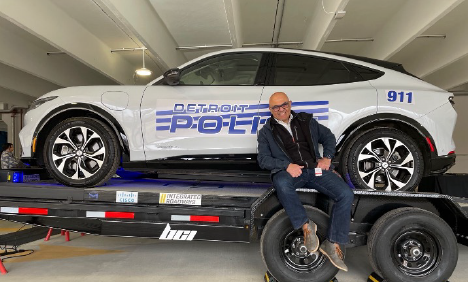
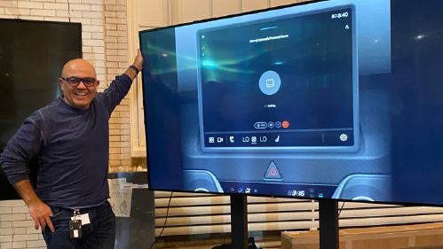
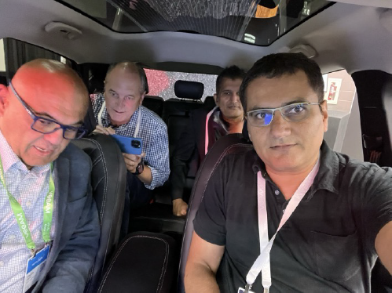
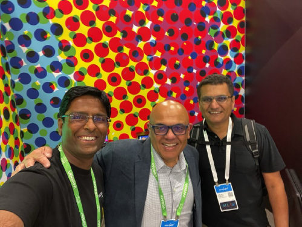

"My first car was a 1984 Accord," recalls Hazim with a nostalgic expression. Cars have always fascinated Distinguished Engineer Hazim Dahir, particularly after he began conceptualizing the vehicle as a technological device several years ago, coinciding with Ford's announcement about transitioning to a new chipset.
Cisco's Move from IT Partner to Inside the Vehicle
Ford standardized on Google for their infotainment system and required an in-car collaboration partner. Ray Cushman, Ford Client Director, recognized an opportunity to position Cisco inside vehicles.
Despite Ford's existing Microsoft relationship and conversations with Zoom, the company's software-defined vehicle strategy required Cisco's distinctive capabilities in connectivity, security, and user experience. Webex became Cisco's entry point.
Shifting Into a New Gear
Ray Cushman and Hazim Dahir collaborated on the Ford account. Hazim's IoT expertise and architectural experience made him the ideal technical leader.
Key considerations included simultaneous vehicle interior and exterior dynamics, plus real-time processing for highway-speed operations.
Innovating the Hybrid Way
Android Automotive's early-stage development lacked necessary Webex support, requiring Cisco and Ford engineers to develop additional features. The team utilized a "Car in a Box" development toolkit featuring Qualcomm chipsets matching Ford's specifications. Hazim established an emulator in his home lab.

Creating Webex on Wheels
Security and privacy presented complex challenges. Hazim poses critical questions:
The team needed to resolve identity verification: "We knew what identity issues to solve for, but who owns what? Is the identity resolved at the Android level and passed on to Webex? Do we do it at both levels and slow down the experience by adding multiple steps? How far do we take multi-factor authentication? Login/logoff?"
The Regulations and Safety Challenge
Safety regulations required careful consideration. Hazim notes: "We need to think about things related to distraction and the legal aspect of things. If you go from park to drive, what happens? The cameras have to shut down. The videos have to shut down. You must go on audio only."
Transitions required seamless execution. Hazim emphasizes: "It cannot be like when you leave your car today, and you need to rejoin feeling like you lost 20 seconds of the conversation. Similarly, we have to consider what happens when the driver arrives to their destination and wants to exit the vehicle. Do they have to exit the call too?"
Worthy of the Webex Name
The team successfully engineered configurable cameras, microphones, speakers, and displays supporting single users or multiple vehicle occupants, all while maintaining safety standards.

At Cisco Live, Ford President and CEO Jim Farley highlighted Webex's potential for unlocking productivity for drivers and enabling over-the-air software updates after vehicle delivery.
Webex: The Platform to Bring Connectivity Together
Describing future possibilities, Hazim envisions: "Imagine, you park your car. Your car sits on top of a charger. Through induction, your car starts charging. Now the charger has to identify you. Identify your credit card. Bill it. Identify the type of car you have so it doesn't overcharge the battery. There's a lot of intelligence that comes into it."
Car-sharing, commercial fleet applications, and undisclosed possibilities remain under development.

Applications: Get Out of Our Dreams, Get Into Our Cars
Technology's purpose evolves constantly. Soon people may say: "Remember when a car's purpose was transportation and Webex meant video calls?"
The team continuously asks: "What else can we do with the car to help people live their lives?"
The Future is Connected
This story represents the intersection of automotive innovation and collaboration technology — where a two-ton vehicle becomes the latest Webex device, transforming how we think about productivity, connectivity, and the future of transportation.